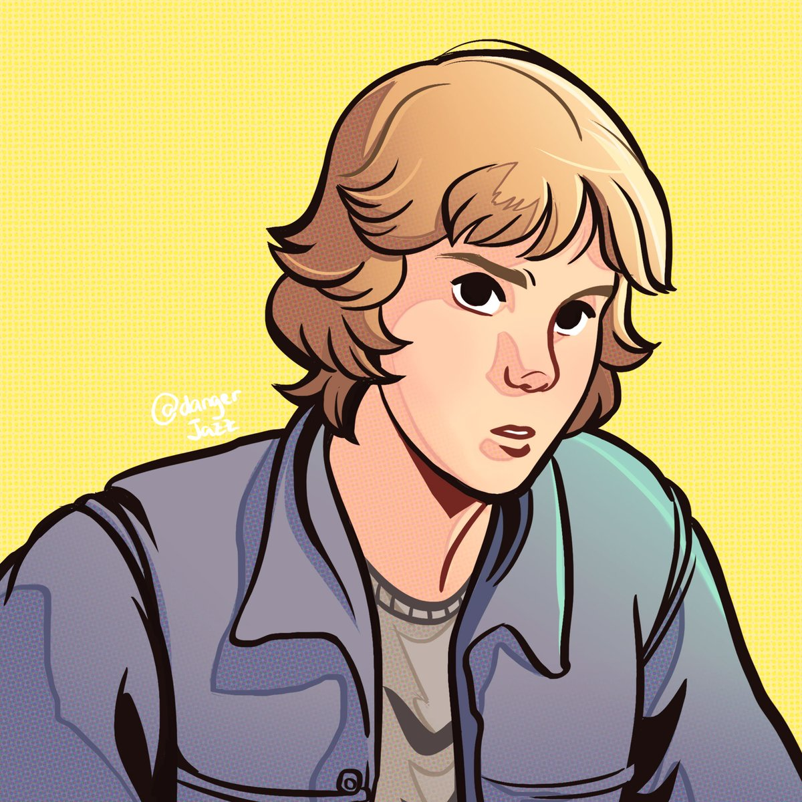

Antes de começarmos nossa aventura, tenho que te contar algumas coisas bem importantes. Ontem eu estava fazendo um som, chapando de maconha e de repente minha mãe chega furiosa no meio do ensaio. Eu esqueci meu LP do Kiss, o "Love Gun", na vitrola. Que erro. Ela me deu um esporro, até ai, tudo certo. Foda foi quando ela foi pegar meu casaco pra lavar e encontrou meus ingressos pro show da banda mais quente do mundo.
Por mais que o filme se passe em Cleveland-Ohio e Detroit-Michingan, na verdade ele foi rodado em Toronto!Estudo na John F. Kennedy High School, onde aquela velha se dirigiu pra me buscar pelo braço e me botar em um internato, porque ela acredita que KISS significa "Knights in Satan's Service". Ortodoxa e autoritaria como ninguém. Meus amigos foram ver se estava tudo certo com os ingressos e tiveram que correr do bedel.
Uma vez que já sabemos que nosso set de filmagem fica em Toronto, e John F kennedy é realmente uma escola de Cleveland, temos que colocar a verdade na mesa: aquela escola é a "Cedarbrae Collegiate Institute".Saindo da Escola, ela, descontrolada me levou pra um internato, St Bernards Veil of Tears. Mas como quem tem amigo, tem tudo, os meus fizeram a boa! Invadiram o internato e colocaram cogumelos mágicas na pizza do padre chefe, possibilitando minha fuga! Próxima parada, Detroit!
O palco para uma viagem de cogumelo e o resgate foi, na verdade, a "Trafalgar Castle School". É uma escola de garotasUm dos meus amigos coneguiu 4 ingressos para o Show, duma radio de Detroit. Na estrada tivemos pequenos problemas com um bando de mano tentando pagar de alfa. Chutamos o cú dele e ainda demos carona pra uma moça que tava com eles.
Nossa estrada pra detroit seria a I-90W e I-75N. Essas são estradas estadunidenses. As cenas foram gravadas na 407 Road, na província de Ontário.Chegando lá, descobrimos que nosso amigo não segurou a ligação até o final, por mais que ele tenha ganhado a promoção da radio, ficamos sem ingresso. Temos 1 hora e 45 min pra arranjar um jeito de entrar no show. Pra piorar, tava rolando um protesto anti-KISS. Advinha quem estava liderando? Pra meu desprazer, minha mãe. Desesperado, ela me leva a uma igreja e me força a "confessar".
As imagens do foram feitas em frente da "The Cathedral Church of St. James"Nessa onda torta, uma broto do meu colégio me avistou, e foi correndo atrás de mim. Ela entrou no confessionário comigo e as coisas ficaram finalmente boas. PERDI MINHA VIRGINDADE NO CONFESSIONÁRIO!!1!
As imagens do confessionário seriam na mesma igreja, St. James, mas algo deu errado, quando o clero soube que teria uma cena de sexo no confessionário. Mudando assim a localização para a "Metropolitan United Church"Esqueci de falar, lembra daquela moça que a gente deu carona? Ela roubou nosso carro! Ou melhor, foi o que pensavamos. Encontramos o carro prestes a ser desmanchado e ela prestes a ser abusada. Literalmente soltaram os cachorros pra salvar ela e o carro.
Essa Auto-elétrica onde foi rodada essa cena, fica no final da Bayview Street. Perto do Cobo Hall!Por final, saimos na mão pra ter a desculpa que fomos assaltados. E a desculpa colou!! Vamos ver o KISS pelo terceiro ano consecutivo!
Cobo Hall é de fato uma casa de show em Detroit, popularmente conhecida como TCF Center, hoje em dia. Mas como você se lembra, o filme foi gravado em Toronto. A arena que usaram como "Cobo hall" foi na verdade a "Copps Coliseum" em Hamilton, Canadá.